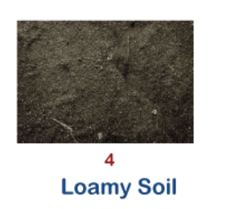

<h4>Loamy Soil
    The loamy soil or Loam is usually formed with a combination of clay, sand, and silt. That is why it includes the benefits of all these three soils. Some essential advantages of this type of soil are air circulation, different textures, better water retention, drainage, and fertility. Due to its advantages, this type of soil is known as agricultural soil. This soil eventually helps in holding water and plant food and allows air to pass through its particles down to the roots. Because of multiple benefits, loamy soil is considered one of the riches soil types for crop production.
    
    Apart from this, loamy soil has higher pH levels, calcium, and good nutrients. Depending on the mixture's composition, loamy soil is referred to as either sandy or clay Loam or silt loam. A typical loam generally favors any single soil particle size over the two others. However, there are various ways to increase the soil's overall quality, such as adding soil inoculants, spraying leaves and soil with compost tea, or covering the soil with compost.</h4>